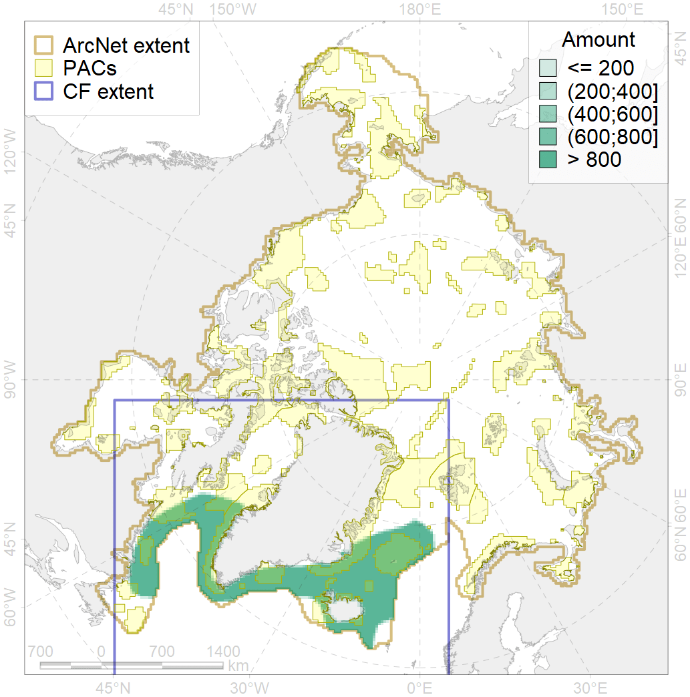
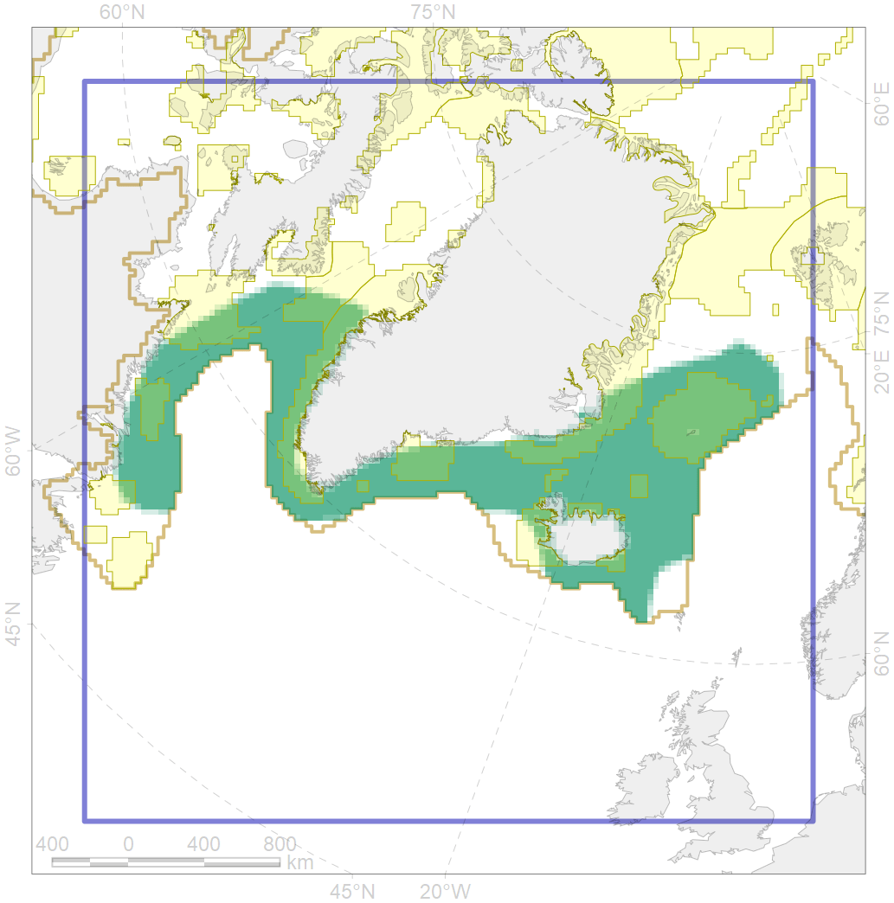

6002

| CF ID | 6002 |
| CF Name | Little Auk (Alle alle alle) winetring grounds |
| Time Period | 2016 |
| Source(s) | Gaston & Hipfner 2000, http://seatrack.seapop.no/map/ |
| Seasonality | November-March |
| Depth Horizon | >0 m |
| Methodology | Field Data |
| Author Name | Gavrilo, Tertitski |
| Notes | |
| Conservation Target Set in the Scenario | 0.24 |
| Conservation Target Achieved in the Scenario | 0.347 (Scenario: 144.7%) |
| PAC ID | Proportion in the PAC | Contribution to ArcNet Target Achievement | PAC’s Contribution to the Achieved Target |
|---|---|---|---|
| 32 | 5.2% | 18.7% | 12.9% |
| 34 | 9.0% | 32.7% | 22.6% |
| 35 | 0.1% | 0.6% | 0.4% |
| 36 | 0.6% | 1.8% | 1.3% |
| 37 | 0.4% | 0.8% | 0.6% |
| 38 | 1.4% | 4.9% | 3.4% |
| 39 | 0.6% | 2.0% | 1.4% |
| 40 | 0.1% | 0.4% | 0.3% |
| 41 | 0.5% | 1.3% | 0.9% |
| 42 | 2.7% | 10.5% | 7.3% |
| 43 | 0.2% | 0.7% | 0.5% |
| 44 | 5.8% | 22.1% | 15.3% |
| 45 | 2.0% | 7.8% | 5.4% |
| 76 | 2.8% | 11.2% | 7.7% |
| 77 | 2.0% | 7.7% | 5.3% |
| 78 | 0.0% | 0.0% | 0.0% |
| 79 | 0.5% | 1.8% | 1.2% |
| inner | 33.9% | 124.9% | 86.3% |
| outer | 64.9% | 19.8% | 13.7% |